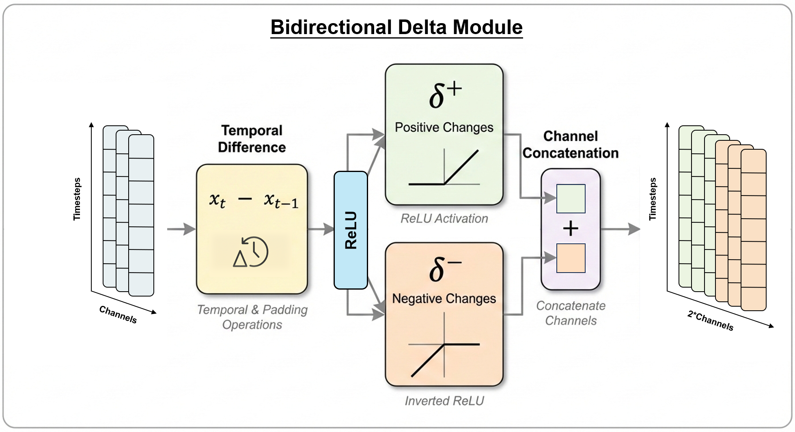
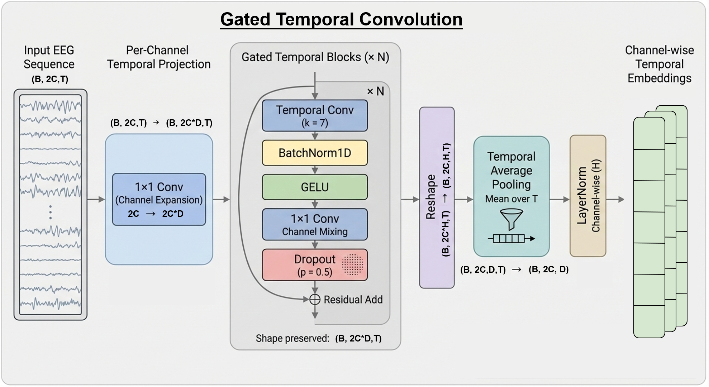
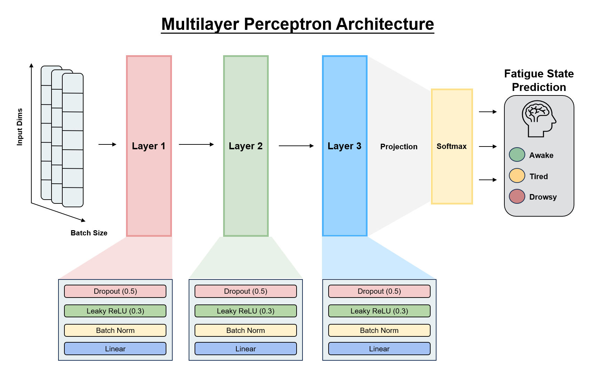
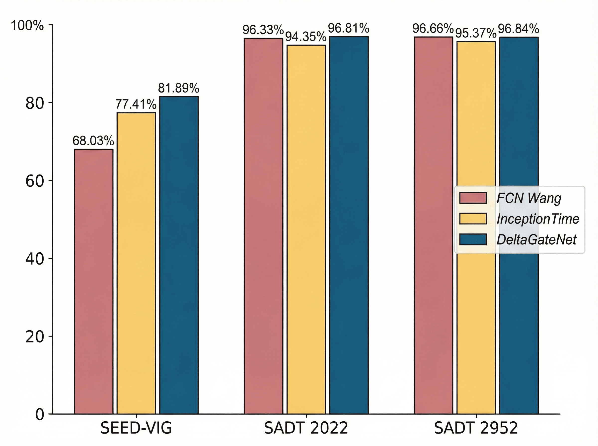
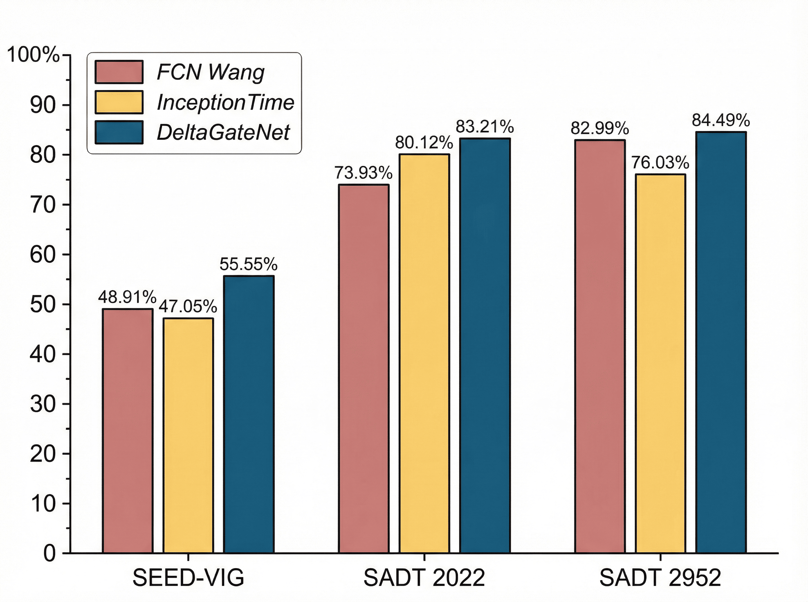
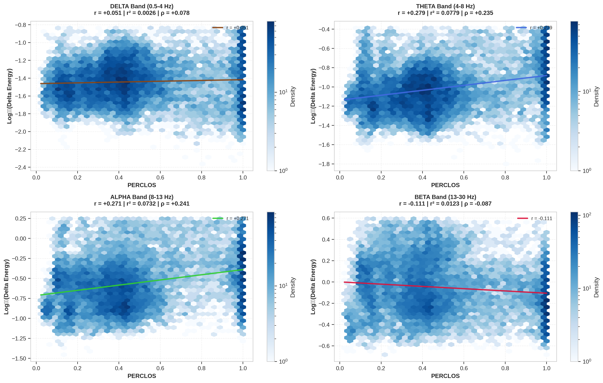

Bidirectional Temporal Dynamics Modeling for EEG-based Driving Fatigue Recognition
Abstract
Driving fatigue is a major contributor to traffic accidents and poses a serious threat to road safety. Electroencephalography (EEG) provides a direct measurement of neural activity, yet EEG-based fatigue recognition is hindered by strong non-stationarity and asymmetric neural dynamics. To address these challenges, we propose DeltaGateNet, a novel framework that explicitly captures bidirectional temporal dynamics for EEG-based driving fatigue recognition. Our key idea is to introduce a Bidirectional Delta module that decomposes first-order temporal differences into positive and negative components, enabling explicit modeling of asymmetric neural activation and suppression patterns. Furthermore, we design a Gated Temporal Convolution module to capture long-term temporal dependencies for each EEG channel using depthwise temporal convolutions and residual learning. Extensive experiments on SEED-VIG and SADT datasets demonstrate that DeltaGateNet consistently outperforms existing methods, achieving 96.84% intra-subject and 84.49% inter-subject accuracy on SADT-2952.
Model Architecture

DeltaGateNet overview. The framework consists of three main stages: Bidirectional Delta module (positive/negative differential separation), Gated Temporal Convolution block (channel-wise temporal modeling + soft gating), and Multilayer Perceptron for final fatigue classification (3 classes: alert, mildly fatigued, severely fatigued).
Core Components

Bidirectional Delta
Δ⁺ (increasing) & Δ⁻ (decreasing) decomposition via ReLU. Captures asymmetric neural activation and suppression patterns from first-order temporal differences.

Gated Temporal Conv
Depthwise temporal conv + GELU gating + residual connections. Selects salient temporal features while preserving channel-wise specificity.

Multilayer Perceptron
Compact MLP with LeakyReLU, BatchNorm, Dropout (0.5). Projects enriched embeddings to three fatigue-level probabilities.
Experimental Results

Intra-subject performance. DeltaGateNet achieves 96.84% on SADT-2952 and 81.89% on SEED-VIG, surpassing existing methods.

Inter-subject generalization. Robust cross-subject accuracy (84.49% on SADT-2952) demonstrating superior generalization.

Frequency-band correlation. BidirectionalDelta energy correlates strongly with PERCLOS, especially in theta/alpha bands.
BibTeX
@article{yip2026bidirectional,
title={Bidirectional Temporal Dynamics Modeling for EEG-based Driving Fatigue Recognition},
author={Yip Tin Po and Jianming Wang and Yutao Miao and Jiayan Zhang and Yunxu Zhao and Xiaomin Ouyang and Zhihong Li and Nevin L. Zhang},
journal={arXiv preprint arXiv:2602.14071},
year={2026},
url={https://arxiv.org/abs/2602.14071}
}